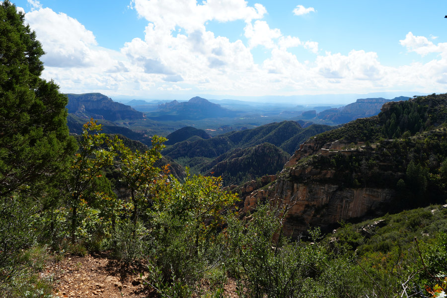
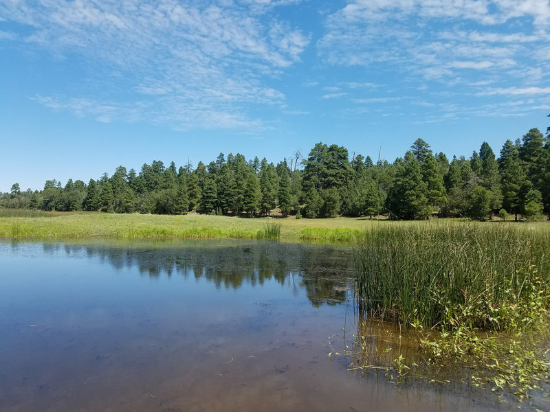
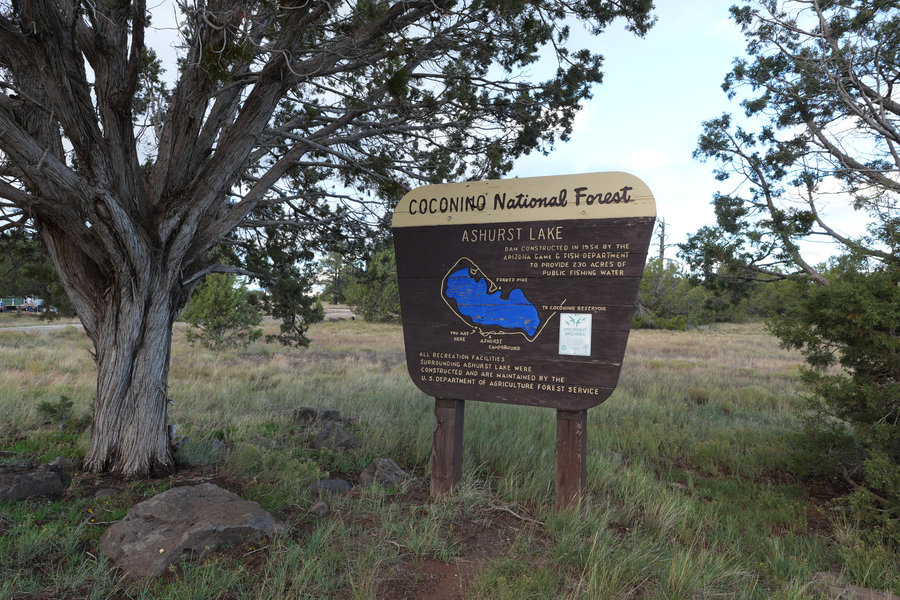
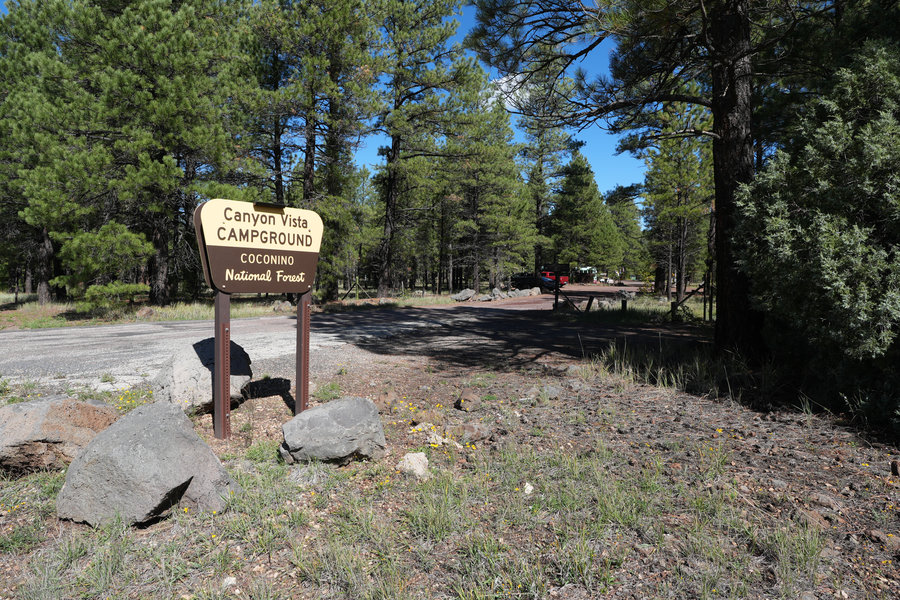
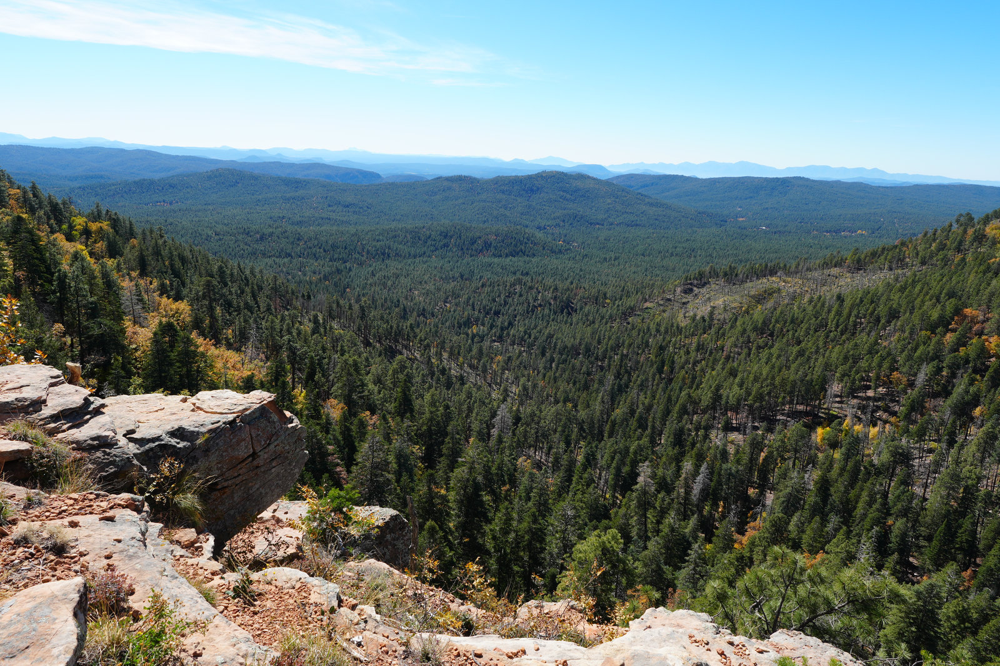
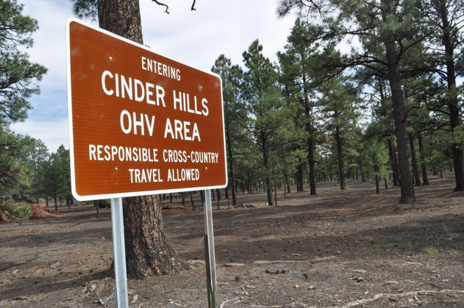

Edge of the World
The dramatic payoff pick: huge views, real exposure, rough-road judgment, and no room for casual wind planning.
 By Chris Follin
By Chris FollinREGION GUIDE
Flagstaff is the most flexible high-country camping lane on the site: lakes, pine campgrounds, rougher forest-road options, and open meadow camps that feel completely different from the desert below.
Flagstaff can be a reservation campground with tables and toilets, a windy lake weekend, a rough forest-road pullout, or a big-view dispersed trip where the weather decides everything. The mistake is treating all of those as the same kind of camping.

The dramatic payoff pick: huge views, real exposure, rough-road judgment, and no room for casual wind planning.

Open meadow camping with big sky, quieter mornings, and enough roughness that self-contained campers will like it more.

A practical lake campground when you want water, cooler air, and enough structure to keep the weekend simple.

The steadier developed-campground choice when trail access, shade, and less lake-corridor chaos matter.

A useful self-contained practice lane close to town: shaded pullouts, no services, and flexible site choice.

Good only when OHV riding is the point. Expect dust, exposure, noise, and soft volcanic footing.
Use this before opening individual camp pages. The biggest Flagstaff difference is not distance; it is how much service, wind exposure, and road uncertainty the trip can tolerate.
| Camp | Best Use | Services | Watch For | Pick When |
|---|---|---|---|---|
| Edge of the World | Dispersed cliff-edge views, sunrise, photos | No facilities; self-contained only | Wind, cliff exposure, road conditions, late arrivals | The view is the main goal and the forecast is calm |
| Marshall Lake | Open meadow camping, birds, dark sky, space | Primitive; no toilets, tables, or water | Soft ground, wind, seasonal water levels | You want room near Flagstaff and can bring everything |
| Ashurst Lake | Developed lake weekend, fishing, easy overnight | Tables, rings, toilets; seasonal services | Wind over the lake, exposed sites, weekend pressure | You want the lake without a long dirt-road project |
| Canyon Vista | Pine-shaded developed base and trail access | Developed campground basics | Peak-season noise, variable cell, seasonal water | You want a calmer base instead of lake-corridor traffic |
| Pinegrove | Lake Mary access, shade, family basecamp | Developed campground; seasonal services | Reservations, busy corridor feel, variable cell | You want paved access and shade more than solitude |
| Lakeview | Lake Mary days and first-time campground trips | Developed campground basics | Popular weekends, open wind, road/lake activity | You want a straightforward lake-corridor campground |
| Dairy Springs | Mormon Lake basecamp, group weekends, shade | Developed campground basics | Seasonal water, Friday arrivals, ordinary sites | You want a known pine campground for a crew |
| Double Springs | Quieter dinners, shade, simple routines | Developed campground basics | Seasonal water and fewer standout features | You want less lake-corridor energy |
| FR 171 | Free dispersed practice near town | No toilets, water, trash, or reservations | Muddy ruts, dust, traffic, site hunting | You are self-contained and flexible about pads |
| Cinders OHV | OHV riding, open vehicle-focused camping | Dispersed; no campground services | Dust, noise, exposure, soft climbs, rain | The terrain is the reason for the trip |
Flagstaff has enough options that you should be able to say no quickly. These are the cleanest decisions.
EASY LAKE
Choose: you want a normal campground, lake access, and a lower-stress weekend. Skip: the forecast is windy or you need quiet, separated sites.
QUIETER DEVELOPED
Choose: you want shade, campground basics, and less emphasis on the lake. Skip: the whole point of the trip is water access.
SELF-CONTAINED
Choose: you have water, trash, toilet, and weather plans handled. Skip: anyone in the group expects bathrooms, tables, or a guaranteed site.
HIGH PAYOFF
Choose: you are comfortable with dispersed camping and the forecast is calm. Skip: you are arriving late, towing, or treating cliff-edge wind casually.
VEHICLE PLAY
Choose: OHV terrain is the point. Skip: you want a restful camp, clean gear, shade, or a normal campground feel.
FAMILY BASE
Choose: you want predictable shade and campground routines. Skip: you are chasing a memorable view or a remote feeling.
These are the individual Flagstaff-area camp pages I would use to compare road feel, campground style, wind exposure, and how much structure the trip needs.
MUD
FR 171, Marshall, and the bigger-view dispersed options can be easy when dry and annoying or damaging when soft. If storms are in the forecast, choose a developed campground or a higher, firmer pad.
WIND
Stake the fly, point doors away from gusts, and do not treat a shade canopy like a permanent structure. Pinegrove, Canyon Vista, and Double Springs are better sleep choices when wind is the main risk.
BACKUP
Flagstaff makes forgotten items and weather pivots easier, which is why it is a good testing ground. Still bring water, trash bags, warm layers, and a second campground target before you leave pavement.